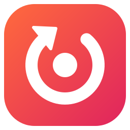

Encore for YouTube MusicCode signing policy
Encore is free, open-source software under the GPL-3.0. Its source code is public at github.com/lilcham1/youtube-music-desktop.
Windows releases are being prepared for free code signing for open-source projects by SignPath.io, with a certificate by SignPath Foundation. Until that is in place, installers are not signed.
How releases are built
- Every release is built by GitHub Actions from a version tag in the public repository (release workflow). No release is built on a personal computer.
- The build runs the test suite first; a failing test stops the release.
- Each release publishes the installer and its SHA-512 fingerprint. The app checks that fingerprint before installing an update.
- Only binaries built from this project's own source code are signed.
Team roles
Contributions from others are reviewed by a committer before they are merged.
Privacy
Encore has no accounts, analytics, telemetry or ads, and its developer receives no data from it. Settings and sign-ins are stored only on your PC, in %USERPROFILE%\.youtube-music.
The app connects to these services, and only these:
| Service | When | What is sent |
|---|---|---|
| YouTube Music (Google) | Always: the app shows music.youtube.com | What any browser sends to YouTube Music, under Google's privacy policy. |
| GitHub | At startup, then every 4 hours | A request for the latest release, to offer updates; the installer is downloaded from GitHub when you update. |
| Discord (on your PC) | When Discord status is on | The current song, artist, album, artwork and timer, plus the “Listen along” and “Get Encore” links, to the Discord app running on your PC, which shows them on your profile. |
| ntfy.sh | While you host or join a listen-along session. With the Discord “Listen along” button on, your session waits for listeners and sends nothing until a friend joins. | Playback updates (song, position, paused or playing), and a check-in from each listener every 10 minutes, end-to-end encrypted with a key that only exists in your session code. ntfy.sh can't read them. |
The app doesn't transfer information to any other networked system unless you ask it to.
Not affiliated with Google, YouTube or Discord. YouTube Music is a trademark of Google LLC.